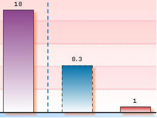
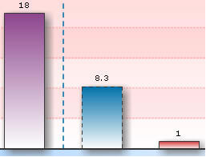
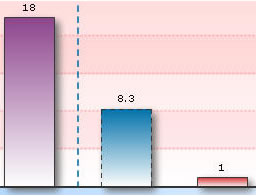
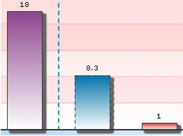

The Shadow Style Type helps you apply shadow effect to any of the chart objects. It extends the following configurable properties:
Properties |
Description |
Distance |
The offset distance for the shadow (in pixels). The default value is 4 |
Angle |
The angle of the shadow. Valid values are 0 to 360˚. The default value is 45 |
Color |
The color of the shadow in hex code (without #). The default value is CCCCCC |
Alpha |
The alpha transparency value for the shadow color. Valid values are 0 to 100. For example, 25 sets a transparency value of 25%. |
blurX |
The amount of horizontal blur. Valid values are 0 to 255. The default value is 4. Values that are a power of 2 (such as 2, 4, 8, 16 and 32) are optimized to render more quickly than other values. |
blurY |
The amount of vertical blur. Valid values are 0 to 255. The default value is 4. Values that are a power of 2 (such as 2, 4, 8, 16 and 32) are optimized to render more quickly than other values. |
Strength |
The strength of the imprint or spread. The higher the value, the more color is imprinted and the stronger the contrast between the shadow and the background. Valid values are from 0 to 255. The default is 1. |
Quality |
The number of times to apply the shadow effect. Valid values are 0 to 15. The default value is 1, which is equivalent to low quality. A value of 2 is medium quality, and a value of 3 is high quality. Shadow with lower values are rendered quicker |
The following code helps set the shadow distance and angle:
<style name='MyFirstShadow' type='Shadow' distance='6' angle='45'/>
Property |
Format |
Example |
Distance |
distance='value in pixels' |
distance='6' |
Angle |
angle='value between 0 to 360' |
angle='45' |
When applied on the columns of a 2D Column Chart, as under:
<apply toObject='DataPlot' styles='MyFirstShadow' />, it gives the following output: |
You can set any distance (in pixels) and any angle between 0-360.
<style name='MyFirstShadow' type='Shadow' color='FF5904' alpha='40' distance='6' angle='45' />
Property |
Format |
Example |
Color |
color='Hex value (without #)' |
color='FF5904' |
Alpha |
alpha='value (between 0 to 100)' |
alpha='40' |
The above code changes shadow color to orange (FF5904) with a transparency of 40% as under:
|  |
You can configure the blur amount of shadow as under:
<style name='MyFirstShadow' type='Shadow' distance='6' angle='45' blurX='16' blurY='16'/>
Property |
Format |
Example |
blurX |
blurX='value' |
blurX='16' |
Blurry |
blurY='value' |
blurY='16' |
|
 |
(Original shadow
– without any blur) |
(With blurX and blurY
as 16) |
<style name='MyFirstShadow' type='Shadow' distance='6' angle='45' quality='10'/>
Property |
Format |
Example |
Quality |
quality='value' |
quality='10' |
Strength |
strength='value' |
strength='3' |
|
 |
(With default quality) |
(With quality set
as 10) |
You can also set the strength of the shadow as under:
<style name='MyFirstShadow' type='Shadow'
distance='6' angle='45' strength='3'/>
with the following results:
|
 |
(With default strength) |
(With strength set
as 3) |
Using a combination of the above discussed attributes, you can create shadow effects the way you like it!
Let's now shift focus to Glow Style Type.